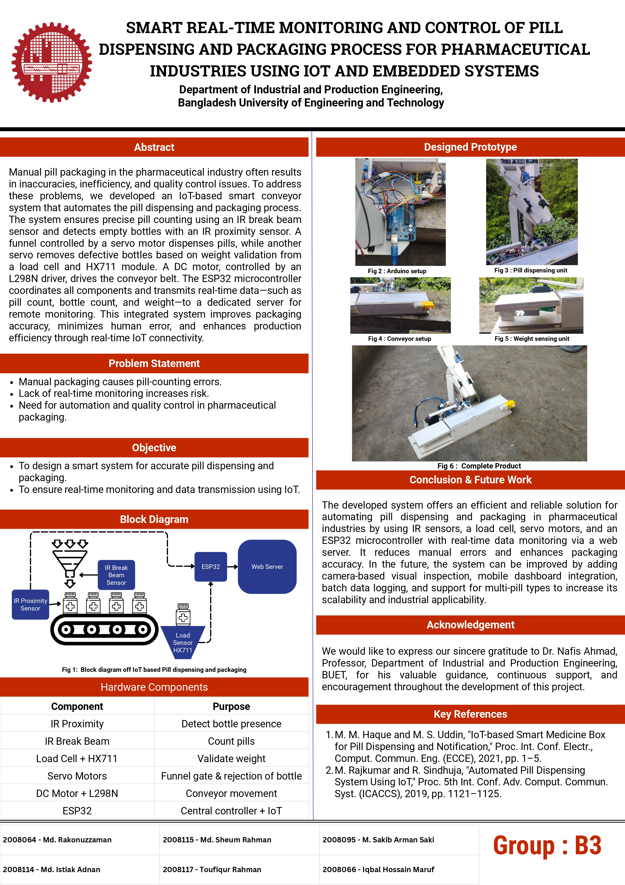

Manual inspection of pharmaceutical packages often results in errors such as underfilled containers, mislabeling, and missing items. These issues compromise safety, regulatory compliance, and productivity.
| Device / Component | Task / Function |
|---|---|
| Servo Motor (SG90) | Operates the gate that controls the fall of pills through the Break Beam sensor |
| IR Break Beam Sensor | Counts the number of pills |
| DC motor + L298N motor driver | Works as the prime mover of the conveyor belt |
| IR Proximity sensor | Controls start and stop of conveyor belt as well as counts the number of bottles being filled |
| Load sensor + HX711 Amplifier | Measures weight of each bottle to recheck whether the weight is within the specification limit or not |
| Servo Motor (MG996R) | Controls mechanical arm to remove the bottle that is out of specification limit |
| Arduino UNO | Controls all the sensors and servo motors |
| ESP-32 | Sends data to the website |

#include <Servo.h>
#include "HX711.h"
// Pin definitions
#define PROX_SENSOR 2
#define EMITTER_PIN 3
#define BEAM_SENSOR 4
#define GATE_SERVO_PIN 5
#define REJECT_SERVO_PIN 6
#define HX_DT 7
#define HX_SCK 8
#define MOTOR_IN1 9
#define MOTOR_IN2 10
Servo gateServo;
Servo rejectServo;
HX711 scale;
int bottleCount = 0;
int pillCount = 0;
bool gateOpen = false;
bool bottleProcessing = false;
bool lastProxState = false;
bool lastBeamState = true;
const int targetPillCount = 5;
const float weightMin = 180.0;
const float weightMax = 200.0;
void setup() {
Serial.begin(9600);
pinMode(PROX_SENSOR, INPUT);
pinMode(EMITTER_PIN, OUTPUT);
pinMode(BEAM_SENSOR, INPUT);
pinMode(MOTOR_IN1, OUTPUT);
pinMode(MOTOR_IN2, OUTPUT);
digitalWrite(EMITTER_PIN, HIGH); // IR emitter on
gateServo.attach(GATE_SERVO_PIN);
rejectServo.attach(REJECT_SERVO_PIN);
gateServo.write(0); // Gate closed
rejectServo.write(0); // Neutral
scale.begin(HX_DT, HX_SCK);
scale.set_scale(767.83); // Adjust this value after calibration
scale.tare(); // Zero scale
startConveyor();
}
void loop() {
bool currentProx = digitalRead(PROX_SENSOR) == HIGH;
if (currentProx && !lastProxState && !bottleProcessing) {
stopConveyor();
delay(300);
bottleProcessing = true;
pillCount = 0;
gateOpen = true;
gateServo.write(15); // Open gate
}
if (gateOpen) {
bool currentBeam = digitalRead(BEAM_SENSOR) == LOW;
if (currentBeam && lastBeamState) {
pillCount++;
Serial.println("pill_count," + String(pillCount));
}
lastBeamState = !currentBeam;
if (pillCount >= targetPillCount) {
gateServo.write(0); // Close gate
gateOpen = false;
delay(700);
startConveyor();
}
}
if (bottleProcessing && !gateOpen) {
delay(2000);
stopConveyor();
float weight = scale.get_units();
if (weight > 1.0) { // Filter out noise
bottleCount++;
// Send to ESP32 over Serial
Serial.print("weight:");
Serial.print(String(weight, 2));
Serial.print(",bottle:");
Serial.println(String(bottleCount));
if (weight < weightMin || weight > weightMax) {
rejectServo.write(0);
delay(500);
rejectServo.write(180);
}
}
scale.tare();
bottleProcessing = false;
startConveyor();
}
lastProxState = currentProx;
}
void startConveyor() {
digitalWrite(MOTOR_IN1, HIGH);
digitalWrite(MOTOR_IN2, LOW);
}
void stopConveyor() {
digitalWrite(MOTOR_IN1, LOW);
digitalWrite(MOTOR_IN2, LOW);
}